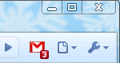
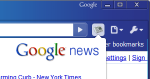
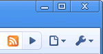
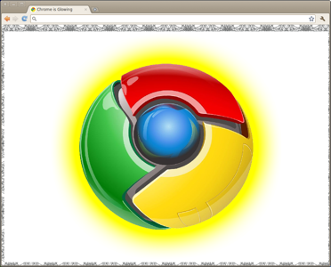
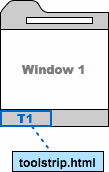
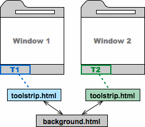
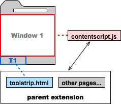

Except as otherwise noted, the content of this page is licensed under the Creative Commons Attribution 3.0 License, and code samples are licensed under the BSD License.
©2011 Google
Once you've finished this page and the Getting Started tutorial, you'll be all set to start writing extensions and packaged apps.
Note: Packaged apps are implemented as extensions, so unless otherwise stated, everything in this page applies to packaged apps.
An extension is a zipped bundle of files—HTML, CSS, JavaScript, images, and anything else you need—that adds functionality to the Google Chrome browser. Extensions are essentially web pages, and they can use all the APIs that the browser provides to web pages, from XMLHttpRequest to JSON to HTML5.
Extensions can interact with web pages or servers using content scripts or cross-origin XMLHttpRequests. Extensions can also interact programmatically with browser features such as bookmarks and tabs.
Many extensions—but not packaged apps—add UI to Google Chrome in the form of browser actions or page actions. Each extension can have at most one browser action or page action. Choose a browser action when the extension is relevant to most pages. Choose a page action when the extension's icon should appear or disappear, depending on the page.
|  |  |  |
| This mail extension uses a browser action (icon in the toolbar). | This news reader extension features a browser action that, when clicked, shows a popup. | This map extension uses a page action (icon in the address bar) and content script (code injected into a web page). |
Extensions (and packaged apps) can also present a UI in other ways, such as adding to the Chrome context menu, providing an options page, or using a content script that changes how pages look. See the Developer's Guide for a complete list of extension features, with links to implementation details for each one.
A packaged app usually presents its main functionality using an HTML page that's bundled into the app. For example, the following packaged app displays a Flash file within an HTML page.
For more information, see Packaged Apps.
Each extension has the following files:
While you're working on your extension,
you put all these files into a single folder.
When you distribute your extension,
the contents of the folder are packaged into a special ZIP file
that has a .crx suffix.
If you upload your extension using the
Chrome Developer Dashboard,
the .crx file is created for you.
For details on distributing extensions,
see Hosting.
You can put any file you like into an extension,
but how do you use it?
Usually,
you can refer to the file using a relative URL,
just as you would in an ordinary HTML page.
Here's an example of referring to
a file named myimage.png
that's in a subfolder named images.
<img src="images/myimage.png">
As you might notice while you use the Google Chrome debugger, every file in an extension is also accessible by an absolute URL like this:
chrome-extension://<extensionID>/<pathToFile>
In that URL, the <extensionID> is a unique identifier that the extension system generates for each extension. You can see the IDs for all your loaded extensions by going to the URL chrome://extensions. The <pathToFile> is the location of the file under the extension's top folder; it's the same as the relative URL.
The manifest file, called manifest.json,
gives information about the extension,
such as the most important files
and the capabilities that the extension might use.
Here's a typical manifest file for a browser action
that uses information from google.com:
{
"name": "My Extension",
"version": "2.1",
"description": "Gets information from Google.",
"icons": { "128": "icon_128.png" },
"background_page": "bg.html",
"permissions": ["http://*.google.com/", "https://*.google.com/"],
"browser_action": {
"default_title": "",
"default_icon": "icon_19.png",
"default_popup": "popup.html"
}
}
For details, see Manifest Files.
Most extensions have a background page, an invisible page that holds the main logic of the extension.

The preceding figure shows a browser
that has at least two extensions installed:
a browser action (yellow icon)
and a page action (blue icon).
The browser action's background page,
which is defined by an HTML file
(background.html),
has JavaScript code that controls
the behavior of the browser action in both windows.
The background page isn't the only HTML page
that an extension can have.
For example, a browser action can have a popup,
which is implemented by an HTML file.
Extensions can also
use chrome.tabs.create()
or window.open()
to display HTML files that are in the extension.
The HTML pages inside an extension have complete access to each other's DOMs, and they can invoke functions on each other.
The following figure shows the architecture
of a browser action's popup.
The popup's contents are a web page
defined by an HTML file
(popup.html).
The popup doesn't need to duplicate code
that's in the background page
(background.html)
because the popup can invoke functions on the background page.
See the Browser Actions page and the Communication between pages section for more details.
If your extension needs to interact with web pages, then it needs a content script. A content script is some JavaScript that executes in the context of a page that's been loaded into the browser. Think of a content script as part of that loaded page, not as part of the extension it was packaged with (its parent extension).
Content scripts can read details of the web pages the browser visits, and they can make changes to the pages. In the following figure, the content script can read and modify the DOM for the displayed web page. It cannot, however, modify the DOM of its parent extension's background page.
Content scripts aren't completely cut off from their parent extensions. A content script can exchange messages with its parent extension, as the arrows in the following figure show. For example, a content script might send a message whenever it finds an RSS feed in a browser page. Or a background page might send a message asking a content script to change the appearance of its browser page.
For more information, see Content Scripts.
The HTML pages within an extension often need to communicate. Because all of an extension's pages execute in same process on the same thread, the pages can make direct function calls to each other.
To find pages in the extension, use
chrome.extension
methods such as
getViews() and
getBackgroundPage().
Once a page has a reference to other pages within the extension,
the first page can invoke functions on the other pages,
and it can manipulate their DOMs.
Extensions can save data using
the HTML5 web storage API
(such as localStorage)
or by making server requests that result in saving data.
Whenever you want to save something,
first consider whether it's
from a window that's in incognito mode.
By default, extensions don't run in incognito windows,
and packaged apps do.
You need to consider what a user expects
from your extension or packaged app
when the browser is incognito.
Incognito mode promises that the window will leave no tracks. When dealing with data from incognito windows, do your best to honor this promise. For example, if your extension normally saves browsing history to the cloud, don't save history from incognito windows. On the other hand, you can store your extension's settings from any window, incognito or not.
Rule of thumb: If a piece of data might show where a user has been on the web or what the user has done, don't store it if it's from an incognito window.
To detect whether a window is in incognito mode,
check the incognito property of the relevant
Tab or
Window object.
For example:
var bgPage = chrome.extension.getBackgroundPage();
function saveTabData(tab, data) {
if (tab.incognito) {
bgPage[tab.url] = data; // Persist data ONLY in memory
} else {
localStorage[tab.url] = data; // OK to store data
}
Now that you've been introduced to extensions, you should be ready to write your own. Here are some ideas for where to go next: